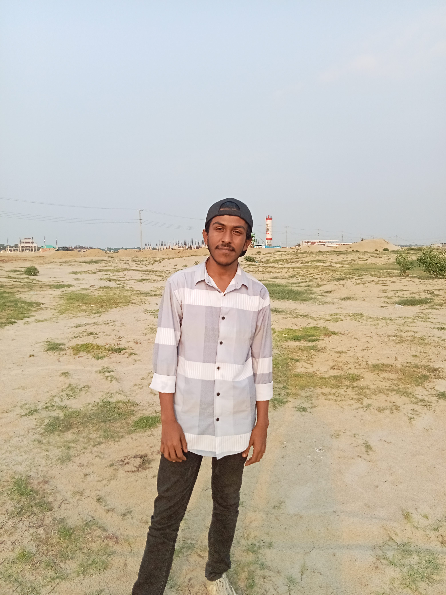

Akik Faraji
Building the architecture the AI industry refuses to build — sparse, efficient, autonomous, and entirely on your terms. Founder of FRAZIYM TECH & AI. Architect of XORZEN and AXONIX-ZERO.
How this started

Akik Faraji
Founder & CTO · Chief Architect
Dhaka, Bangladesh · 2026
Akik is 19, from Dhaka, Bangladesh. He has no formal CS degree and no institutional funding. Everything he has built — XORZEN, AXONIX-ZERO, and FRAZIYM — was built from scratch, alone, on an HP EliteBook 840 using CPU compute.
The XORZEN Framework began not as a product, but as a research obsession: standard transformer models are wasteful. Every token gets processed through every layer at full cost, regardless of whether it's a complex reasoning step or the word "the." Akik built XORZEN to prove a better architecture was possible — one where the model thinks proportionally to what each token actually demands.
He dropped his board exams to keep building. Not as a dramatic gesture — simply because XORZEN was working and stopping felt impossible. AXONIX-ZERO came next: a proof that a fully autonomous AI agent could run entirely on your own hardware, with no cloud, no API key, no data leaving your machine. Both products are real, both are documented in detail on this site.
The company, FRAZIYM TECH & AI, is pre-seed and pre-registration. The technology is not. XORZEN architecture is complete and verified. AXONIX-ZERO is in active beta at ~90% completion. The fundraiser on this site is how Akik is trying to get the GPU compute needed to train XORZEN-277M at scale.
"The next leap won't come from a bigger model — it will come from a smarter architecture. Dense transformers are hitting a wall. XORZEN routes each token through only what it actually needs. That's not a trick. That's the future."
— Akik Faraji
For partnerships, enterprise deployment, investment discussions, or just to talk AI architecture.
Why XORZEN changes everything
Akik's foundational insight — before the company, before AXONIX-ZERO, before anything — was that the transformer architecture that runs 99% of AI models today is fundamentally wasteful. XORZEN is the answer.
The Problem Akik Identified
Every transformer processes every token through every layer at full compute cost. A period, a pronoun, and a complex reasoning step all cost exactly the same. This is computational waste on a massive scale, and it's why big models require massive infrastructure.
The XORZEN Solution
XORZEN routes each token through only the pathways, layers, and expert networks it actually needs. Simple tokens exit early. Hard tokens get deep processing. The model is 90% sparse during inference — meaning 90% of compute is idle at any given moment by design.
The Verified Result
XORZEN-277M activates only ~26M parameters per token — 9.4% of total. Architecture complete, all 327 gradients verified, HASS pathways working. Now at Phase 3: large-scale training on WikiText/OpenWebText. GPU funding = the only blocker.
AXONIX-ZERO: what Akik shipped
While XORZEN is the research thesis, AXONIX-ZERO is the immediate product — and it works today, in beta. Built to prove that a single founder with no GPU budget can build something genuinely powerful.
What it does
axonix.exe — no Python environment needed for end usersCurrent status
Active debugging in progress. Every known issue is documented. Demos show the real build, not a curated highlight reel.
What Akik works in
Python Engineering
Deep Python systems: async, subprocess, SSE servers, PyInstaller bundling, type-annotated APIs, production error hierarchies, structured logging with rotation. Full production discipline.
Deep Learning Research
PyTorch from scratch: custom attention mechanisms, sparse routing algorithms, MoE architectures, BPE tokenizers, quantization (SPPQ), gradient verification, training pipelines on limited compute.
LLM Infrastructure
8+ provider integrations: OpenAI-compatible APIs, Anthropic/Google SDKs, llama-cpp Python bindings, HuggingFace transformers, streaming parsers, unified backend abstraction layers.
Full-Stack Web
FastAPI backends, SSE streaming, real-time web dashboards, production HTML/CSS/JS (this site), responsive design systems, payment flow UX (bKash, Nagad, crypto integration).
Systems Architecture
Factory patterns, unified interface abstractions, plugin architectures, atomic file I/O, workspace sandboxing, loop detection algorithms, tool schema validation, config management.
Solo Product Execution
Ships working software under real constraints: no GPU, no team, no funding. Both XORZEN and AXONIX-ZERO are functional, documented, and verifiable — not slide decks or demos.
GPU hardware is the only blocker
The XORZEN architecture is built and verified. The training system is ready. What Akik needs is 2× RTX 3090 GPUs and 8 months of cloud compute to take XORZEN-277M from "architecture proven at small scale" to "weights released on HuggingFace." This is a community fundraiser — no equity, no promises beyond transparency and updates.
Ready to talk?
Whether you want a demo video of AXONIX-ZERO, a technical deep-dive on XORZEN architecture, or want to discuss investment or partnership — Akik reads and responds to everything personally.